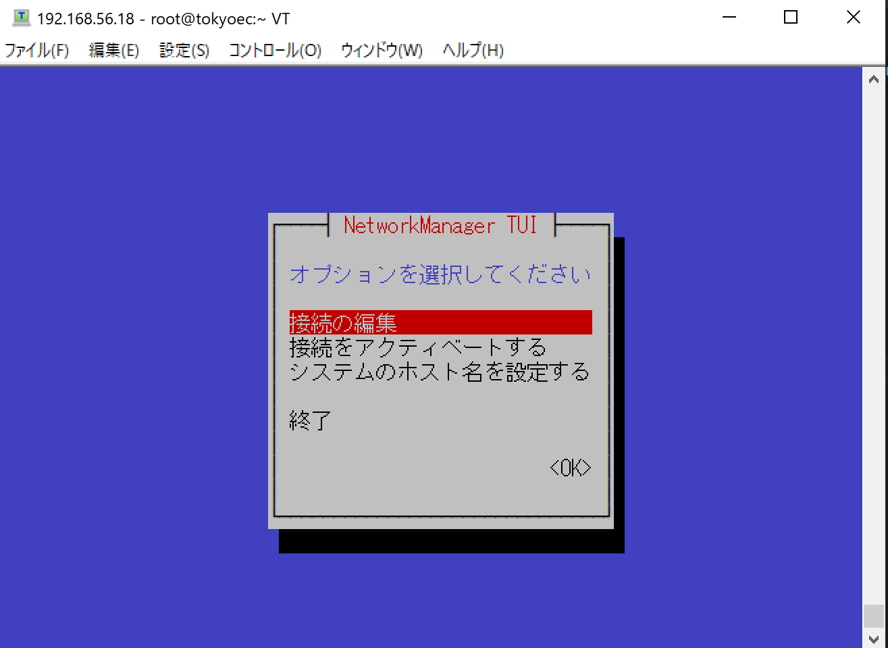
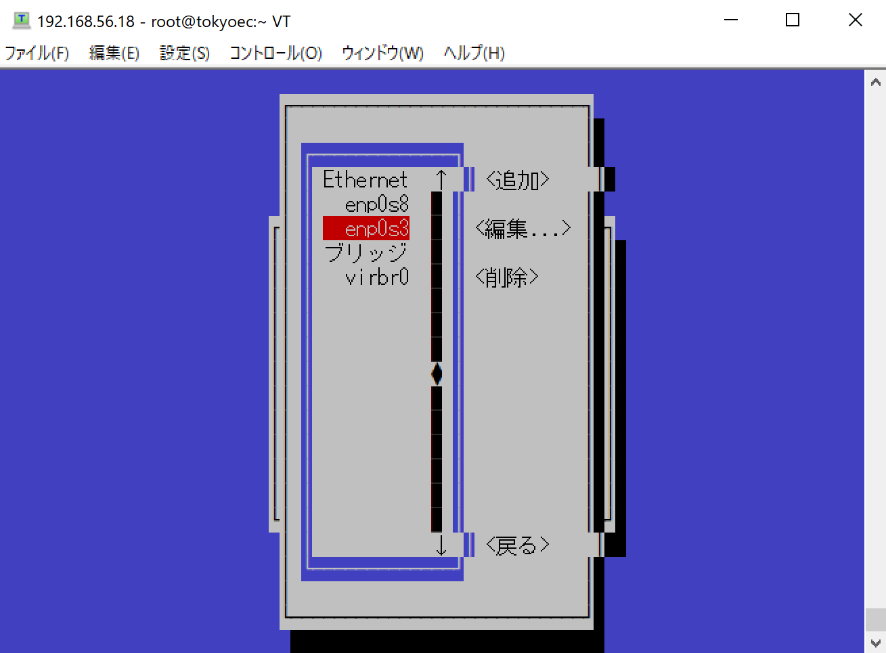
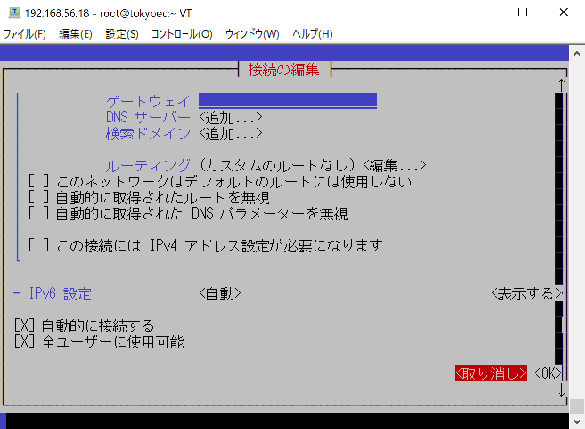
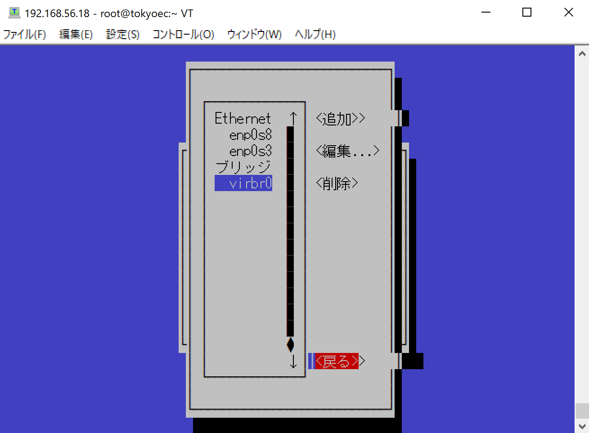
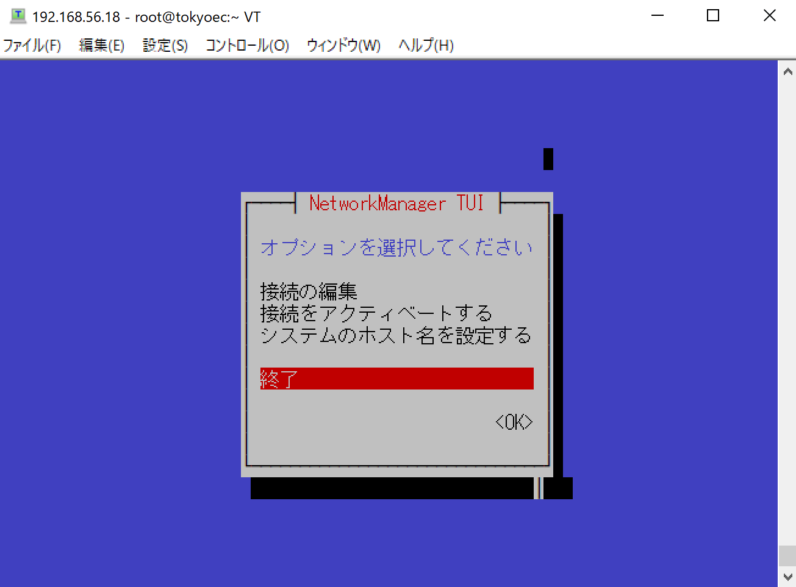

$ su -
パスワード:tokyoec
#
# nmcli connection show enp0s3 | grep IP4
IP4.ADDRESS[1]: 10.0.2.15/24
IP4.GATEWAY: 10.0.2.2
IP4.ROUTE[1]: dst = 0.0.0.0/0, nh = 10.0.2.2, mt = 100
IP4.ROUTE[2]: dst = 10.0.2.0/24, nh = 0.0.0.0, mt = 100
IP4.DNS[1]: 192.168.84.41
IP4.DNS[2]: 192.168.84.1
IP4.DNS[3]: 8.8.8.8
IP4.DNS[4]: 192.168.230.254
IP4.DNS[5]: 163.139.230.164
IP4.DOMAIN[1]: sied.local# nmcli connection modify enp0s3 ipv4.method manual ipv4.address 10.0.2.0/24# nmcli connection modify enp0s3 ipv4.address 10.0.2.0/24# nmcli connection modify enp0s3 ipv4.method auto# systemctl restart NetworkManager
# ip address show enp0s3
2: enp0s3: <BROADCAST,MULTICAST,UP,LOWER_UP> mtu 1500 qdisc fq_codel state UP group default qlen 1000
link/ether 08:00:27:a3:26:3e brd ff:ff:ff:ff:ff:ff
inet 10.0.2.15/24 brd 10.0.2.255 scope global dynamic noprefixroute enp0s3
valid_lft 86393sec preferred_lft 86393sec
inet6 fe80::acad:70d1:c57a:b0db/64 scope link noprefixroute
valid_lft forever preferred_lft forever# nmcli connection show
NAME UUID TYPE DEVICE
enp0s3 dd400f88-eb57-4065-9f99-ebc71df3e564 ethernet enp0s3
enp0s8 00cb8299-feb9-55b6-a378-3fdc720e0bc6 ethernet enp0s8
virbr0 61f17c29-8ead-41bc-aaf7-5695636060f5 bridge virbr0# nmcli connection down enp0s3
接続 'enp0s3' が正常に非アクティブ化されました (D-Bus アクティブパス: /org/freedesktop/NetworkManager/ActiveConnection/1)# nmcli connection show
NAME UUID TYPE DEVICE
enp0s8 00cb8299-feb9-55b6-a378-3fdc720e0bc6 ethernet enp0s8
virbr0 61f17c29-8ead-41bc-aaf7-5695636060f5 bridge virbr0
enp0s3 dd400f88-eb57-4065-9f99-ebc71df3e564 ethernet --# nmcli connection up enp0s3
接続が正常にアクティベートされました (D-Bus アクティブパス: /org/freedesktop/NetworkManager/ActiveConnection/4)# nmcli connection show
NAME UUID TYPE DEVICE
enp0s3 dd400f88-eb57-4065-9f99-ebc71df3e564 ethernet enp0s3
enp0s8 00cb8299-feb9-55b6-a378-3fdc720e0bc6 ethernet enp0s8
virbr0 61f17c29-8ead-41bc-aaf7-5695636060f5 bridge virbr0# exit
ログアウト
$$ su -
パスワード:tokyoec
#
# nmcli general hostname tokyo-ec.com
# hostnamectl status
Static hostname: tokyo-ec.com
Transient hostname: tokyoec.com
Icon name: computer-vm
Chassis: vm
Machine ID: ec3013fcd5694968ae0536d059095897
Boot ID: c193b869958c41588ad66301b47c88cd
Virtualization: oracle
Operating System: CentOS Linux 8 (Core)
CPE OS Name: cpe:/o:centos:centos:8
Kernel: Linux 4.18.0-147.3.1.el8_1.x86_64
Architecture: x86-64# systemctl restart systemd-hostnamed# hostnamectl status
Static hostname: tokyo-ec.com
Icon name: computer-vm
Chassis: vm
Machine ID: ec3013fcd5694968ae0536d059095897
Boot ID: c193b869958c41588ad66301b47c88cd
Virtualization: oracle
Operating System: CentOS Linux 8 (Core)
CPE OS Name: cpe:/o:centos:centos:8
Kernel: Linux 4.18.0-147.3.1.el8_1.x86_64
Architecture: x86-64# cat /etc/hostname
tokyo-ec.com
# exit
ログアウト
$$ su -
パスワード:tokyoec
#
# nmtui
[接続の編集]

[enp0s3]

[取り消し]

[戻る]

[終了]
# exit
ログアウト
$